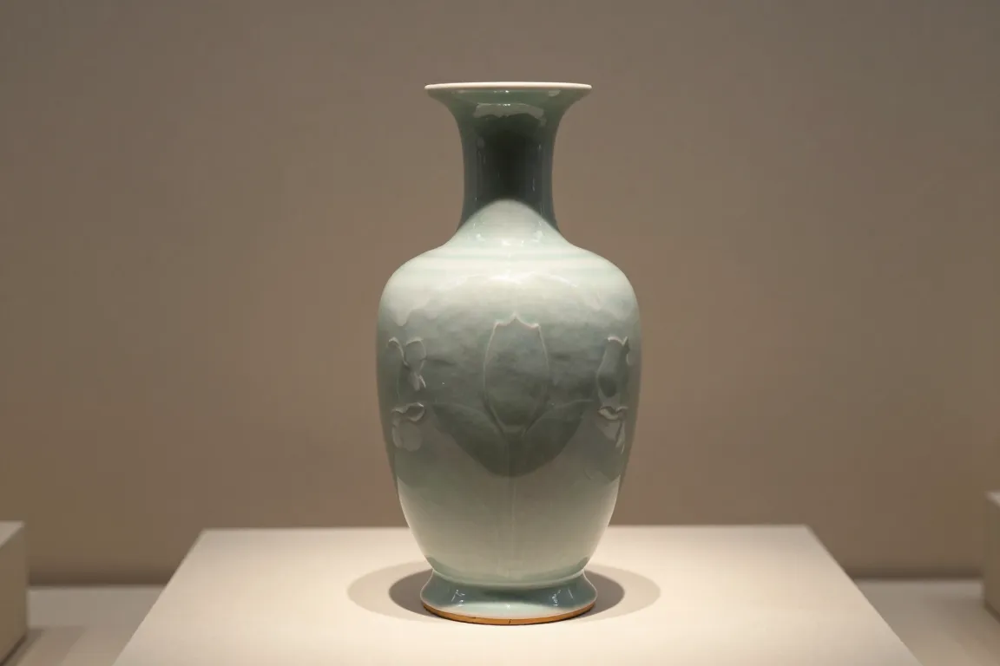

Green-glazed stoneware and porcelain from the kilns of Longquan. Potters built up thick layers of glaze that fire to a soft jade-green, with a plain form that gives the glaze all the beauty.

Core thesis
A vessel reaches beauty when the glaze alone makes it: a thick, quiet green like jade that hides all other ornament.
Design principles
Apply the glaze in 3 to 8 thin layers, with a firing or a drying between layers.
Reach a glaze 1 to 2 mm thick that is opaque, soft and rich in tone.
Fire in strong reduction at 1200 to 1280 °C, so that the iron turns the glaze green.
Use a plain, strong shape with a clean profile; let the glaze be the decoration.
Add only low relief, incised lines or applied moulded figures, under the glaze.
Wipe the glaze off the foot ring, or leave a small part bare so that it turns orange in the fire.
Choose pale blue-green (fenqing) or deeper plum-green (meizi qing) glaze, never a mixed palette.
Anti-patterns
Bright painted decoration on the glaze
A thin transparent glaze that shows the body
A brown, olive or yellow cast from weak reduction
Elaborate shapes with sharp edges that break the glaze flow